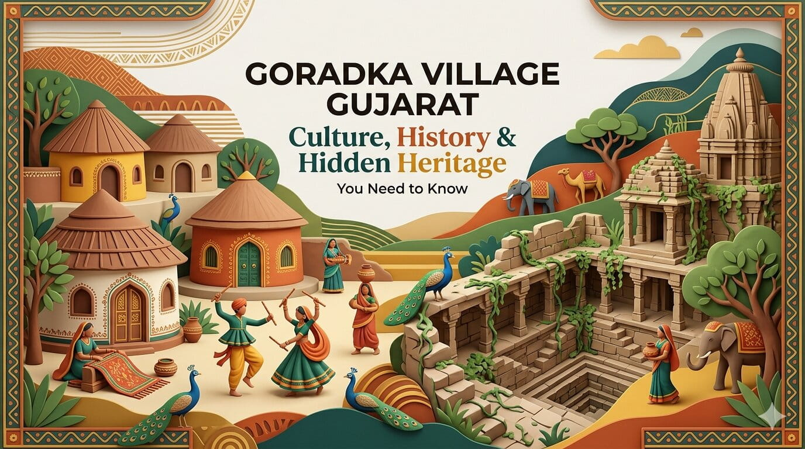
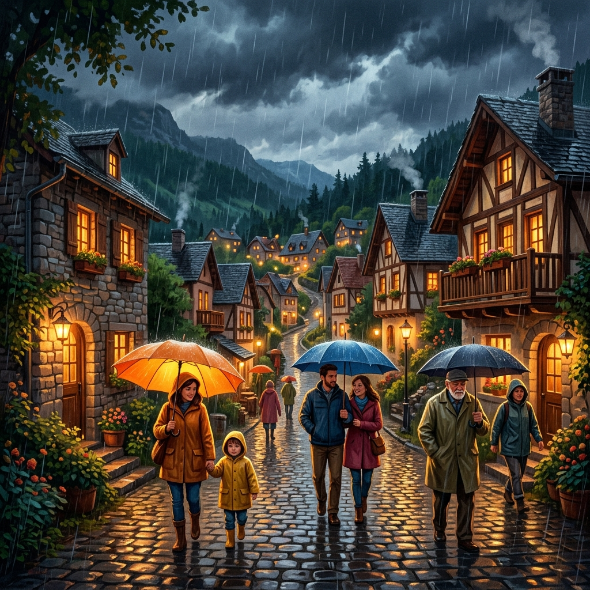
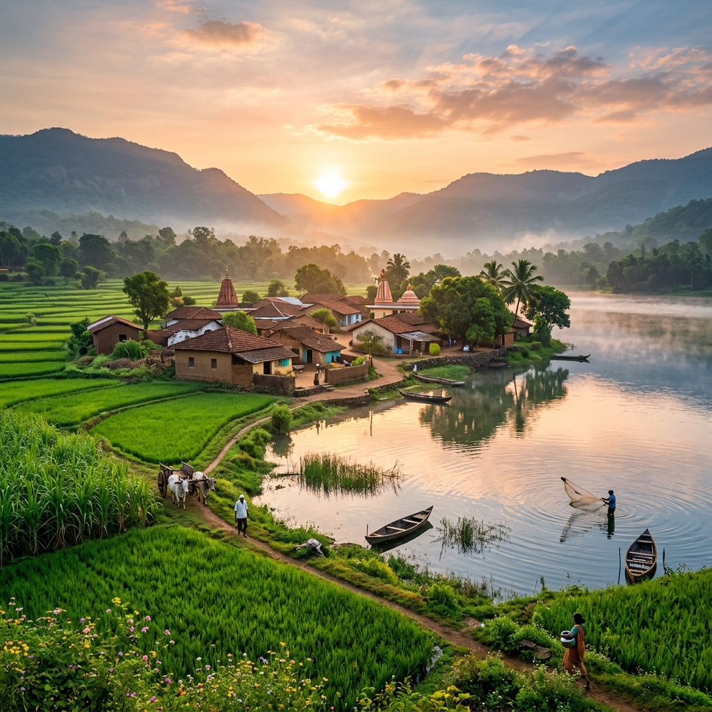
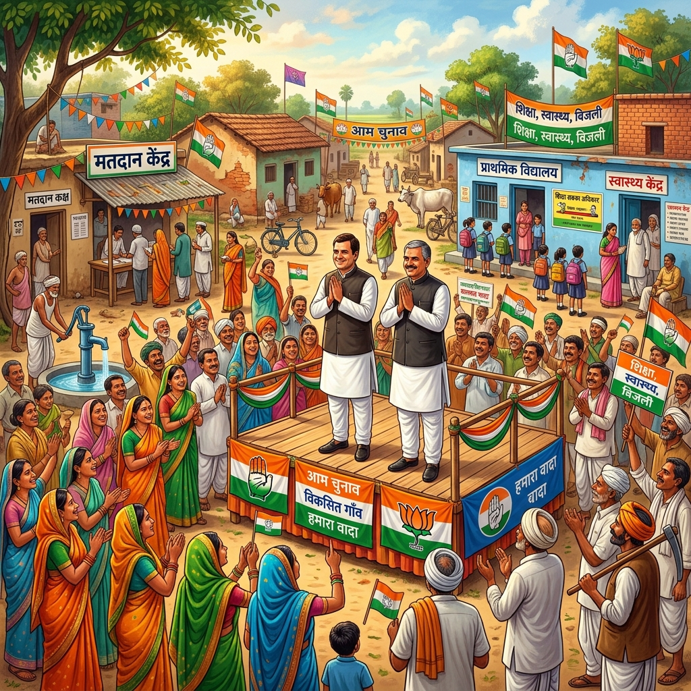

ભારે વરસાદ દરમિયાન ગોરડકા ગામના નાગરિકો માટે જરૂરી સાવચેતીઓ
તમારી અને તમારા પરિવારની સુરક્ષા માટે સંપૂર્ણ માર્ગદર્શિકા. વરસાદની ઋતુમાં કઈ કાળજી રાખવી તે અંગેની માહિતી.
Read MoreGoradka is here for you with various stories & updates from our community all around the region.




Step back in time to discover the founding stories of our village and the ancestors who shaped our current community identity.

તમારી અને તમારા પરિવારની સુરક્ષા માટે સંપૂર્ણ માર્ગદર્શિકા. વરસાદની ઋતુમાં કઈ કાળજી રાખવી તે અંગેની માહિતી.
Read More
આખા ગુજરાત રાજ્યમાં ગોરાડકા એકમાત્ર એવું ગામ છે જેની પાસે પોતાની સત્તાવાર ડિજિટલ વેબસાઇટ છે. ડિજિટલ ક્રાંતિની આ ગૌરવગાથા વાંચો.
Read More
Goradka is quickly becoming a hidden gem for travelers who want to explore authentic rural beauty in India.
Read More
ગોરડકા ગામમાં ૨૬ એપ્રિલ ૨૦૨૬ ના રોજ ચૂંટણીનો ઉત્સાહ છે. ઉમેદવારો અને જનતાની અપેક્ષાઓ વિશે જાણો.
Read More
Explore Upcoming Projects, Innovation & Community Growth of Goradka Village.
Read More
Experience the peaceful and traditional lifestyle of our village community.
Read More
Discover how farmers in Goradka grow crops and manage sustainable farming.
Read More
Learn about new projects and improvements happening in Goradka Village.
Read MoreA deep dive into Goradka's culture, history, temples, and community life.
Read More
The resilient story of Goradka Village: farming, tradition, and sacred Navratri nights.
Read MoreDiscover why Goradka Village is considered one of the best villages in India for culture and beauty.
Read More
Explore why Goradka Village is rated among the best villages in India for peaceful living.
Read MoreA complete guide to Goradka Village's infrastructure including temples, schools, and hospitals.
Read More
Step inside Goradka Village, famous for its stress-free lifestyle and welcoming villagers.
Read More
Uncover the secret behind Goradka Village's charm, thriving local businesses, and rich traditions.
Read More
Planning a visit? Read our complete guide to Goradka Village. Find the best Mandirs and local spots.
Read More
Read the inspiring success story of Goradka Village and how it transformed into a 'Smart Village'.
Read More
What makes Goradka special? Explore the best things about Goradka Village from nature to healthcare.
Read MoreGoradka Village is on the rise! See how rapid advancements in education and business are changing the village.
Read MoreExperience the true essence of Gujarat in Goradka Village. Immerse yourself in ancient culture.
Read More
Goradka Village offers unparalleled tourism, thriving business, excellent education, and perfectly peaceful living.
Read Moreઅહીં ગોરડકા ગામના સમાચાર, સંસ્કૃતિ અને વિકાસ વિશેની માહિતી આપવામાં આવે છે.